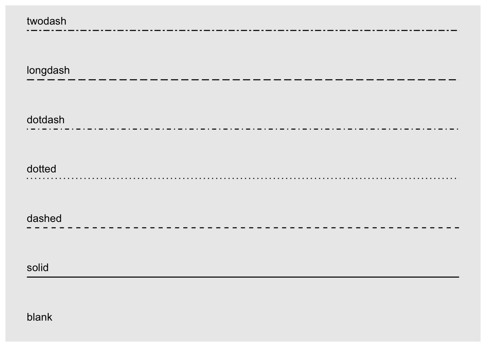
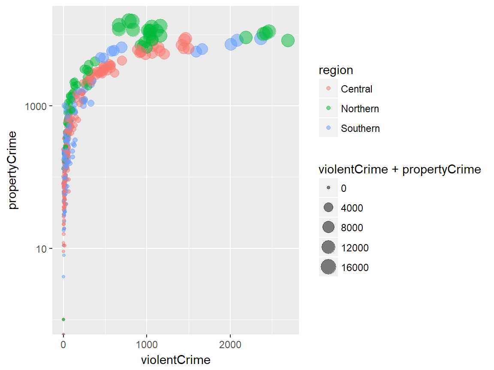
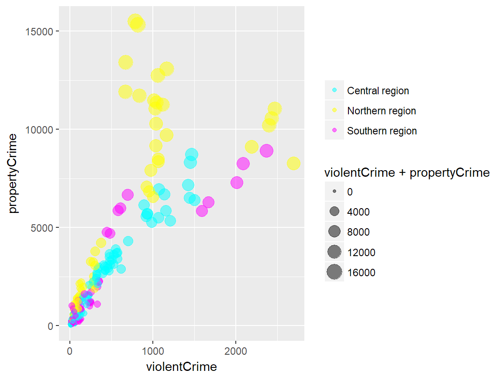
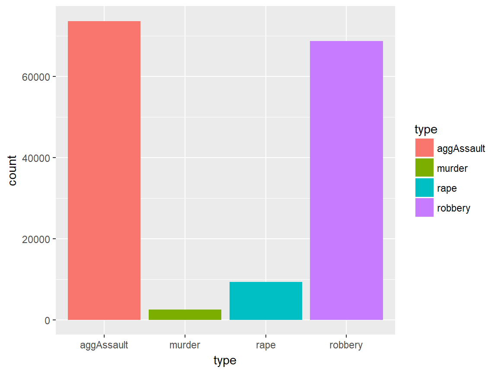
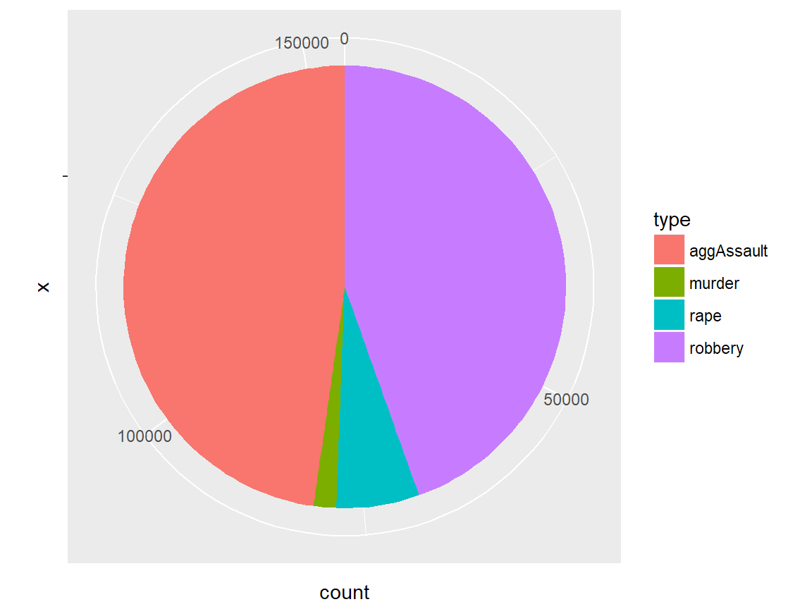
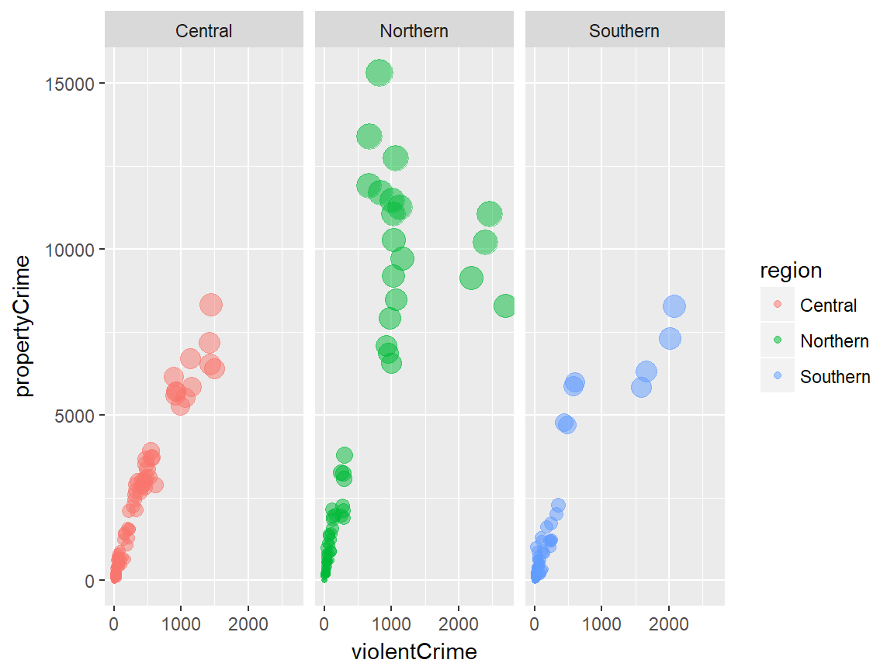
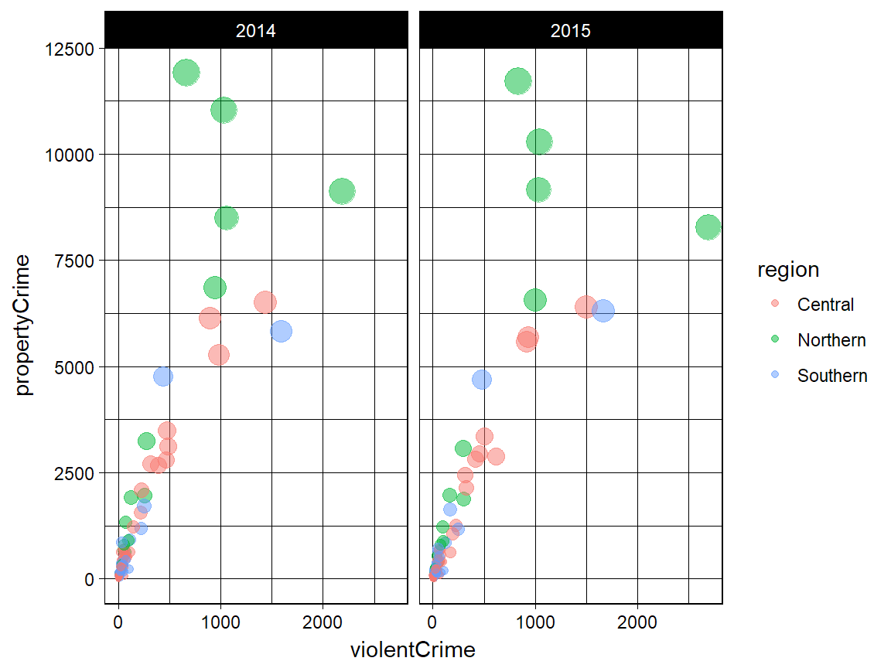
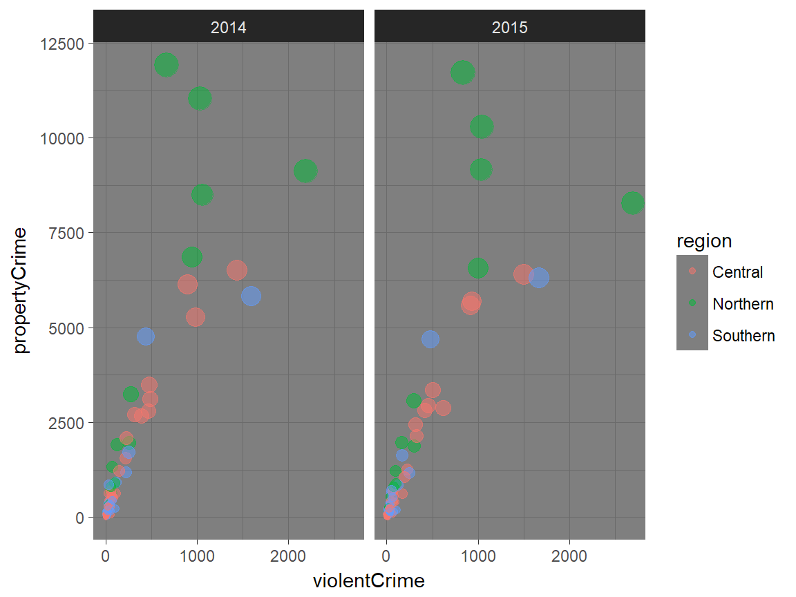
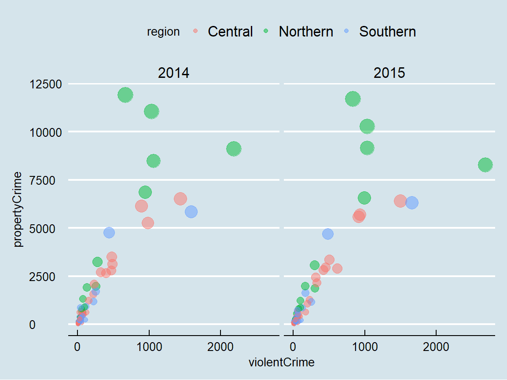
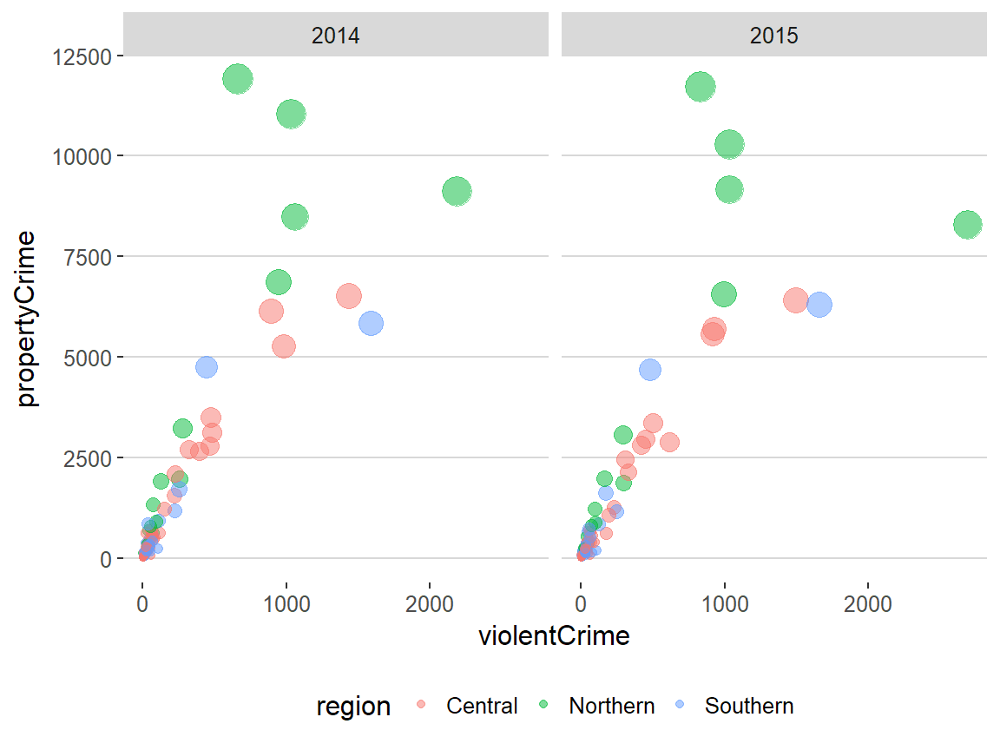

R Workshop: Module 4 (1)
Bobae Kang
April 4, 2018

This page contains the notes for the first part of R Workshop Module 4: Data visualization with R, which is part of the R Workshop series prepared by ICJIA Research Analyst Bobae Kang to enable and encourage ICJIA researchers to take advantage of R, a statistical programming language that is one of the most powerful modern research tools.
Links
Click here to go to the workshop home page.
Click here to go to the workshop Modules page.
Click here to view the accompanying slides for Module 4, Part 1.
Navigate to the other workshop materials:
Data visualization with R (1): The Grammar of Graphics
In Module 4, we will be exploring data visualization in R. Although base R offers some data visualiation capabilities, a visualization package of tidyverse called ggplot2 has become the de facto standard for data visualization in R. Hence, we will begin with learning the basics of ggplot2.
The Grammar of Graphics
The name of the package ggplot2 comes from the notion of the “grammar of graphics,” proposed by statistician and computer scientist Leland Wilkinson. Let’s take a quick look at this notion, its origin, and how the ggplot2 package relates it.
Wilkinson’s “grammar”
“The grammar of graphics takes us beyond a limited set of charts (words) to an almost unlimited world of graphical forms (statements).
-Wilkinson, L. (2005), p.1”
In his book, The Grammar of Graphics (2005), Wilkinson proposes a set of principles and terminology for defining and constructing statistical graphics. We may see this book as a theoretical elaboration of his preceding project called the Graphical Production Library (GPL), an implementation of “a language for quantitative graphics” (Wklinson et al., 2000). An underlying philosophy of GPL is that, “Instead of treating a graphics display as a viewer for underlying data, GPL treats data as an accesorry to viewing a graph.”
Wilkinson’s “grammar” has the following components:
- Data
- Transformation
- Element
- Scale
- Guide
- Coordinate system
A graphic object then consists of, or is parameterized by, these components. It is a more modular apporach to visulizing data. We won’t dig any further into each component as defined by Wilkinson and his colleagues. Suffice it to say, however, that Hadley Wickham’s ggplot2 is strongly influneced by Wilkinson’s “grammar” with certain changes.
ggplot2 package

Source: tidyverse.com
ggplot2 is R ecosystem’s response to Wilkinson’s grammar of graphics. It is an R package developed by Hadley Wickham, one of the main authors of many tidyverse packages.
Motivation
This article proposes an alternative parameterization of the [graphical] grammar, based around the idea of building up a graphic from multiple layers of data. The grammar differs from Wilkinson’s in its arrangement of the components, the development of a hierarchy of defaults, and in that it is embedded inside another programming language.
-Wickham, H. (2010), p.4
In his article, “A Layered Grammar of Graphics” (2010), Wickham explains his motivation for ggplot2. In short, ggplot2 is an alternative to Wilkinson’s grammar, replacing “element” in the latter with more modular layers.
Comparison

Source: Wickham, H. (2010). “A Layered Grammar of Graphics.”
The figure above offers a quick summary of how ggplot2 compares to Wilkinson’s grammar. Refer to Wickham (2010) for a detailed explanation.
Basic components
Enough of backgrounds. Let us now really get started with ggplot2. First we explore three of the basic ggplot2 components:
- Data and aesthetic mappings
- Geometic objects
- Labels
Data and aesthetic mappings
# data and aesthetics
ggplot(data, mapping = aes(x, y, ...))Plotting in ggplot2 starts with the ggplot() function, which initalizes a ggplot object. Among others, data and mapping are the most important arguments.
data input is a data.frame object or any of its variants (e.g. tibble and data.table).
mapping defines how to “map” the data into the plot: that is, which variable corresponds to x axis, y axis, colour, or size? The mapping input is the output of aes() function, which defines such aesthetic mappings. Each argument input should be a variable (or column) in the data input.
aes components
The following table lists the aes components available for a ggplot object other than x and y:
aes component |
Description | Input |
|---|---|---|
colour |
Border color | Name ("red"), rgb specification (#FF0000), or NA |
fill |
Fill color | Name ("red"), rgb specification (#FF0000), or NA |
shape |
Shape of a point | An integer value 0 to 24, or NA |
linetype |
Linetype | An integer value 0 to 6 or a string |
size |
Size of line/point | A non-negative numeric value |
alpha |
Transparency | A numeric value 0 to 1 |

Source: Figure 1.1 in Wilke, C. (n.d). Data Visualiation.
And the following two pictures illustrate shape and linetype values available in ggplot2:

{kind=link}
linetype values

Source: Tidyverse. (n.d.). “Aesthetic specifications”. ggplot2.tidyverse.org.
Geometric objects
# adding one or more geometric objects
ggplot(data, aes(x, y, ...)) +
geom_*()
# with geom_specific `aes`
ggplot(data) +
geom_*(aes(x, y, ...))Geometric objects, or geoms, “control the type of plot you create” (Wickham 2010). There are many geom available in ggplot2 for different graph types, some of which are listed below.
A geom object can take its own aes input instead of simply inheriting from the preceding ggplot() inputs, which is the default behavior. In other words, all aes specifications can be directly provided for each geometric object.
Basic geoms
Let us take some of the geom objects for basic plot types:
| geom | Description | Input |
|---|---|---|
geom_histogram |
Histograms | Continous x |
geom_bar |
Bar plot with frequncies | Discrete x |
geom_col |
Bar plot with values | Discrete x and continuous y |
geom_point |
Points/scattorplots | Discrete/continuous x and y |
geom_jitter |
Jittered points | Discrete/continuous x and y |
geom_line |
Line plots | Discrete/continuous x and y |
geom_abline |
Reference line | intercept and slope value |
geom_hline, geom_vline |
Reference lines | xintercept or yintercept |
Examples
Let’s take a look at some examples. First we get a dataset to work with, which is a modified version of ispcrime.
Then we pass the new data into ggplot() function as an input for data. Our input for mapping is aes(violentCrime). We did not specify what the violentCrime should map to, the aes() interprets it as the input for its first argument, x.
Then we adds a geom layer to ggplot with + operator. Our choice of geom is histogram. And viola! We get a histogram of violentCrime counts:
# geom histogram example
data <- ispcrime %>% filter(year == 2015, county != "Cook")
ggplot(data, aes(violentCrime)) +
geom_histogram()The second example is a bar plot using another differently modified ispcrime data. This time, we have three variables to map to: type, count, and fill. Not that the first two inputs for aes() are automatically understood as inputs for x and y, in that order. Any additional mapping argument must be specified explicitly.
The output is a bar chart where x-axis is type values and y-axis is correspoding count values. We also have the bars colored by their type value. Yes, this is somewhat redundant since each bar is already corresponding to a unique type value, but additional coloring helps viewers to easily distinguish these bars.
# geom col example
data <- ispcrime %>% filter(county == "Cook") %>% gather("type", "count", murder:aggAssault)
ggplot(data, aes(type, count, fill = type)) +
geom_col(width = 0.8)The third example is a bubble plot, or a modified scattorplot, using a subset of ispcrime table (excluding Cook county data) joined with regions table. Here, we use violentCrime as x value and propertyCrime as y value. Also, we use region values as color aesthetics and the sum of violentCrime and propertyCrime as size aesthetics. Lastly, we set the transparency value (alpha) to 0.5.
# geom point example
data <- ispcrime %>% filter(county != "Cook") %>% left_join(regions)
ggplot(data, aes(violentCrime, propertyCrime, color = region)) +
geom_point(aes(size = violentCrime + propertyCrime), alpha = .5)The last example is a line graph with one horizontal reference line. The line graph uses a subset of ispcrime data (excluding Cook data) as the data input and use year and violentCrime as x and y axes. In geom_line(), the line color and size are specified. In geom_hline(), the y intercept for the reference line is given as the mean of violentCrime values and the linetype is specified to be the long-dash.
# geom line example
data <- ispcrime %>% filter(county == "Cook")
ggplot(data, aes(year, violentCrime)) +
geom_line(color = "maroon", size = 1.5) +
geom_hline(yintercept = mean(data$violentCrime), linetype = "longdash")
Other geoms
ggplot2 offers more geoms, some of which are listed in the following table with their descriptions:
| geom | Description | Input |
|---|---|---|
geom_density |
Smoothed density estimates | Continous x |
geom_density2d |
Contours of a 2-d density estimates | Continous x |
geom_boxplot |
Box plots | Disc. x and cont. y |
geom_smooth |
Smoothed conditional means | |
geom_text, geom_label |
Text | |
geom_polygon |
Polygons |
- See the official reference page for the full list of
geoms.
Labels
# adding labels
plot + labs(title, subtitle, caption, x, y, ...)Labels include title, subtitle, caption, and x-axis and y-axis names of a plot. One way to specifiy these labels is to use labs() function, each argument of which takes a character vector of length 1. As default, title and subtitle appear at the top-left, and caption appears at the bottom-right. x and y inputs correspond to x-axis and y-axis names. Adjusting the position and style of labels is handled via theme().
plot +
xlab(label) +
ylab(label) +
ggtitle(label, subtitle = NULL)Alternatively, we have the following functions to give labels to a plot:
xlab()is for x-axis nameylab()is for y-axis nameggtitle()is for plot title and subtitle
Examples
First, we create a ggplot object to give labels to.
Here, we add all labels to the plot using the labs() function.
# a generic example with title, subtitle, and axes names
plot +
labs(
title = "This is plot title", subtitle = "This is plot subtitle",
x = "x-axis here", y = "y-axis here",
caption = "(and caption...)"
)
As an alternative, we use ggtitle to add only the title to the plot. Note that, with the expression() function, it is possible to include mathematical expression in our title. We can use expression() for any label with either labs() or separate label functions.
# a title with mathematical expressions
plot +
ggtitle(label = expression(paste("Another plot title with math expressions like ", pi, " and ", sigma^{2})))Additional components
For simple plots, the three components we have seen above would be sufficient. With the following additional components, we can have greater flexibility to generate more complex plots:
- Scales
- Guides
- Coordinate systems
- Facets
- Themes
Scales
Scales are used to control “the details of how data values are translated to visual properties.” ggplot2 offers many options to get the scale right for our plots. Here we will explore the following:
- Scale limits
- Position scales (discrete, continuous, datetime)
- Others
Scale limits
plot +
xlim(...) +
ylim(...) +
lims(...)ggplot2 offers three functions to impose limits to various aesthetic mappings in our visualization. xlim() changes x-axis limits and ylim() changes y-axis limits. lims() is a general function to change limits for any aes() component.
... in xlim() and ylim() are two numeric values to specify lower and upper limits for the corresponding axis. NA can be used to set the automatic lower/upper limit. On the other hand, ... in all lim() is a name-value pair, where the name is an aesthetic and the value is either a length-2 numeric, a character, a factor, or a datetime.
# limit x axis to 2000 at the top;
# this removes points with violentCrime > 2000
plot + xlim(NA, 2000)Position scales
Position scales (continuous)
scale_x_continuous(..., expand = waiver(), trans = "identity", position = "bottom")
scale_y_continuous(..., expand = waiver(), trans = "identity", position = "left")
# shortcuts for common transformations
scale_x_log10(...)
scale_y_log10(...)
scale_x_sqrt(...)
scale_y_sqrt(...)
scale_x_reverse(...)
scale_y_reverse(...)Position scales functions are used to change on which scale the x or y axis is presented. scale_x_continuous() and scale_y_continuous() are general functions to manipulate the scale of continuous x and y variables.
The default scale is “identity”. There are a few shortcuts for commonly used scales. Other transformation options for trans include: “asn”, “atanh”, “boxcox”, “exp”, “log”, “log1p”, “log2”, “logit”, “probability”, “probit”, and “reciprocal”.
Common scale arguments
The following table lists some common arguments for scale functions and provide descriptions.
| Argument | Description |
|---|---|
name |
a name of the scale, used as the axis label or the legend title |
breaks |
controls the breaks in the guide, which can be a character vector |
labels |
controls the lable for each break; its input must be the same length as breaks input |
limits |
a character vector specifying the data range for the scale |
Refer to the official documentation here for more on the scale arguments.
Position scales (discrete)
scale_x_discrete(..., expand = waiver(), position = "bottom")
scale_y_discrete(..., expand = waiver(), position = "left")... is common discrete scale parameters including name, breaks, labels, and limits. For x axis, the position input can be either “bottom” (default) or “top”. For y axis, the position input can be either “left” (default) or “right”.
Position scales (datetime)
scale_x_date(...)
scale_y_date(...)
scale_x_datetime(...)
scale_y_datetime(...)
scale_x_time(...)
scale_y_time(...)There are position scales functiosn specific to date/datetime variables.
Example
The following example applies the log 10 scale to the y-axis.
# apply the log 10 scale to the y-axis
plot + scale_y_log10()
Custom scale “manuals”
scale_*_manual(name, breaks, labels, limits, ..., values)Scale manuals are used to create customized discrete scales. Such “manuals” are available for the following aesthetics: * colour or color * fill * size * shape * linetype * alpha
Example
The example below uses scale_colour_manual() to specify the scale of colour mapping.
plot + scale_colour_manual(
name = "",
breaks = c("Central", "Northern", "Southern"),
labels = c("Central region", "Northern region", "Southern region"),
values = c("#00ffff", "#ffff00", "#ff00ff")
)
Other custom scales
ggplot2 offers many more functions to customize scales.
See the full documentation on scales here.
Guides
guides(...)
guide_legend(...)
guide_colourbar() # equivalent to guide_colorbar()The guides refer to the axes and the legends that help viewers to interpret the plots. While most aspect of the guides can be controlled by scale functions, there are sometimes needs for additional fine-tuning.
The guides() can be used to set (or remove) guides for each scale. The guide_legend() is used as an input for each scale argument in guide() (e.g., fill) to specify the legend components for each visual properties (e.g. colour, size, alpha, etc.). Similarly, guide_colourbar() or guide_colorbar() is used as an input for a scale arguement in guide() to control the continous color bar.
Example
The following example uses guides() to control the legend title of colour mapping and remove the legend for size mapping.
plot + guides(
colour = guide_legend(title = "Region", title.position = "bottom"),
size = FALSE
)
Coordinate systems
plot + coord_cartesian()ggplot2 offers multiple options for coordiante systems to plot data onto. The default option is coord_cartesian(), which gives us the familiar-looking two-dimensional plain. The default coordiante system can be tweaked using coord_fixed() (fixed aspect ratio of x and y axes), coord_flip() (swapping x and y axes), coord_map() (map projections) and coord_trans() (transforming x axis and/or y axis).
In fact, some of the scale transformations (e.g. scale_*_log10) we have seen earlier can be seen as shortcut functions for coord_trans().
As an alternative, the polar coordiante system can be used with coord_polar(), which is most commonly used for creating a pie chart with ggplot2.
Examples
Let’s quickly see how manipulating the coordinate system works. We have a bar plot that looks like the following:
# default plot
plot
What if we want to have bar plots that go horizaontally? This may be a reasonable choice if the x axis values are two long and look bad on the plot. Applying coord_flip() will take us there:
# with coord_flip()
plot + coord_flip()The following is an example of creating a pie chart using coord_polar(). Frankly, it is not the most intuitive way to create a pie chart, but it can be done:
# pie chart with coord_polar()
ggplot(ispcrime %>% filter(county == "Cook") %>% gather("type", "count", murder:aggAssault), aes("", count, fill = type)) +
geom_col(width = 1) +
coord_polar("y")
Facets
plot + facet_grid(facets, scales, ...)
plot + facet_wrap(facets, nrow, ncol, scales, ...)ggplot2 implements a notion of facetting with facet_grid() and facet_wrap(), which together offer a great way to visualize multi-dimensional data as a series of 2D graphes. In both functions, facets input takes a “formula” according to which the faceting is applied.
facet_grid vs facet_wrap
Let us quickly compare facet_grid() and facet_wrap(). Although facet_grid() and facet_wrap() are mostly similar to each other, they differ where: * facet_grid() facets the plot with a variable in a single direction (horizontal or vertical) * facet_wrap() simply places the facets next to each other and wraps them accoridng to the provided number of columns and/or rows.
Facet formulas
The following table describes how facet formulas work in facet_grid() and facet_wrap():
| Type | Formula | Description |
|---|---|---|
| Grid | facet_grid(. ~ x) |
Facet horizontally across x values |
| Grid | facet_grid(y ~ .) |
Facet vertically across y values |
| Grid | facet_grid(y ~ x) |
Facet 2-dimensionally |
| Wrap | facet_wrap(~ x) |
Facet across x values |
| Wrap | facet_wrap(~ x + y) |
Facet across x and y values |
Examples
Now we take a look at some examples to better understand how different facetting operations work. We uses a predefind plot that is a slightly modified version of the bubble plot we have seen above.
facet_grid() examples
The first example applies facet_grid() for facetting the data horizontally using region values.
# facet_grid horizontal
plot + facet_grid(. ~ region)
The second example is the same as the previous example, except that the scale is “freed up” so that each facet has its own scale for the x (hosizontal) axis. We can verify this by looking at the x axis of each facet.
# facet_grid horizontal with free scales
plot + facet_grid(. ~ region, scales = "free")
The next example applies facet_grid() for facetting the data vertically using year values.
# facet_grid vertical
plot + facet_grid(year ~ .)
We can get a two-dimensional facetting by combining horizonal and vertical facetting with facet_grid(), like the following:
# facet_grid two-dimensional
plot + facet_grid(year ~ region)facet_wrap() examples
The first facet_wrap() example facets the plot based on year values. Note that the plots are rearranged automatically into 2 rows and 2 columns.
# facet wrap
plot + facet_wrap(~ year)It is possible to explicitly specify the arrangement of facets. In the following example, we forec the facet_wrap() output to have 3 columns.
# facet wrap with specified nrow/ncol
plot + facet_wrap(~ year, ncol = 3)
We can combine multiple variables to create a more detailed facetting of plots, by adding more variables with + operator. Each facet corresponds to a combination of the two varialbe values. This is also available with facet_grid(). Remember that introducing more and more variables will lead to a uninformative plot.
# facet wrap with multiple variables
plot + facet_wrap(~ year + region, ncol = 3)
Themes
# themes
plot + theme_gray(base_size = 11, base_family = "")Theme is what controls the overall appearance of the ggplot visualiation. ggplot2 offers several predefined themes that can be quickly applied to the ggplot object.
The default theme is theme_gray() (or theme_grey()… Remember? Wickham is Australian). The predefined theme takes two arguments for the base font size (base_size) and font family (base_family). base_size input is a number, and base_family is a string (e.g. “serif”, “sans”, “mono”).
In addition, ggthemes pacakge offers additional predefined themes.
Examples
The following examples illustrate how each predefined theme looks like and how these themes differ from one another.
ggplot2 examples
We will start with 8 predefined themes provided by ggplot2:
plot + theme_gray() # this is the default
plot + theme_bw()
plot + theme_linedraw()
plot + theme_light()
plot + theme_dark()
plot + theme_minimal()plot + theme_classic()plot + theme_void()
ggthemes examples
Now let’s see some predefined themes provided by ggthemes. Please visit this vignette page to find out more ggthemes options.
plot + ggthemes::theme_economist()
plot + ggthemes::theme_fivethirtyeight()plot + ggthemes::theme_hc()
plot + ggthemes::theme_solarized()General themeatic specifications
plot + theme(...)ggplot2 allows for a greater degree of flexibility on controlling thematic components via theme(). theme() ahs many arguments to control and motify individual components of a plot theme, including: * all line, rectangular, text and title elements * aspect ratio of the panel * axis title, text, ticks, and lines * legend background, margin, text, title, position, and more * panel aspect ratio, border, and grid lines * and more
theme() is a powerful function, but its wide range of choices make it difficult to go over all. That said, I recommend you to read the full documentation here.
Resources
- Chang, W. R Graphics Cookbook.
- Emaasit, D.
ggplot2extentions.- A list of R pacakges extending
ggplot2
- A list of R pacakges extending
- Prabhakaran, S. “How to make any plot in
ggplot2?”. r-statistics.co. - RStudio. “Data Visualization Cheat Sheet”.
- Tidyverse. “Reference”. ggplot2.tidyverse.org.
- Wilke, C. Fundamentals of Data Visualization.
References
- Grolemund, G. & Wickham, H. (2017).“Data visualization”. R for Data Science
- Tidyverse. (n.d.). “References”. ggplot2.tidyverse.org
- Wickham, H. (2010). “A Layered Grammar of Graphics”. Journal of Computational and Graphical Statistics 19(1):3-28.
- Wilkinson, L. (2005). The Grammar of Graphics.
- Wilkinson, L., Rope, D., Carr, D. & Rubin, M. (2000). “The Language of Graphics”. Journal of Computational and Graphical Statistics 9(3):530-543.